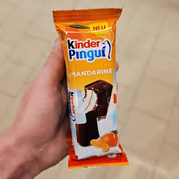

Milch Schnitte

my favorite food of all time one time i ate two package (10pc) at once
i have always loved this all-time classic food ever since i saw it on TV when i was young. was this a recipe page i would teach you how to make it your own. however i'm not doing that so i'll just say and assume you all know what i'm talking about: frische vollmilch zwischen knackiger schokolade
What i love about milch schnitte
- taste like paradise
- 10 pc for a few Euro -> profit$$$
- eine creme aus frischer vollmilch
- waffeln
My Journey
- when i was young i never had much milchschnitte but when i had it was a blessing
- as i got older i tried the other ones, kinder pinguin and maxi king
- milch schnitte was like the basic one so i preferred maxi king wich was special and had like a gangster rapper in the ads
- as i got older i became my true self again and liked milchschnitte the most
Go back to Overview